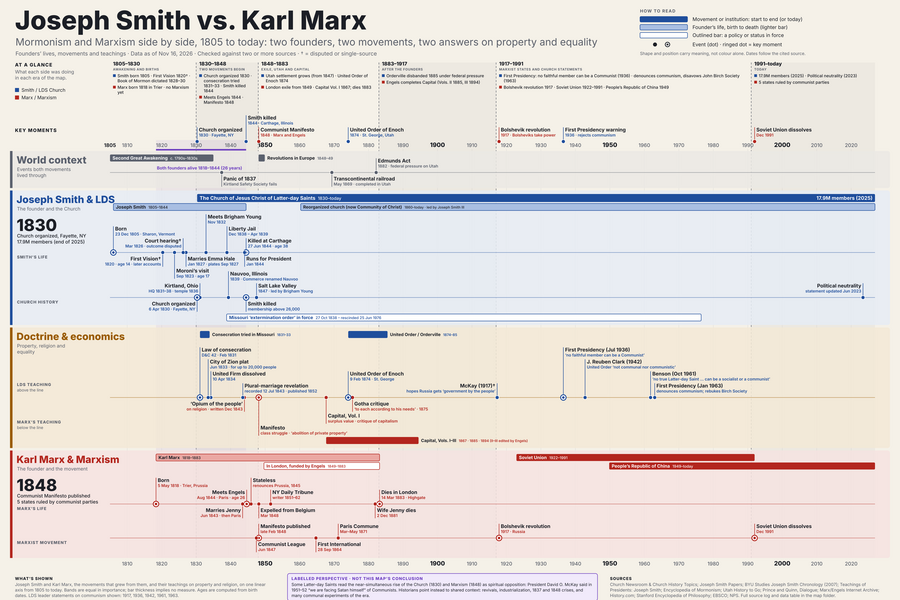
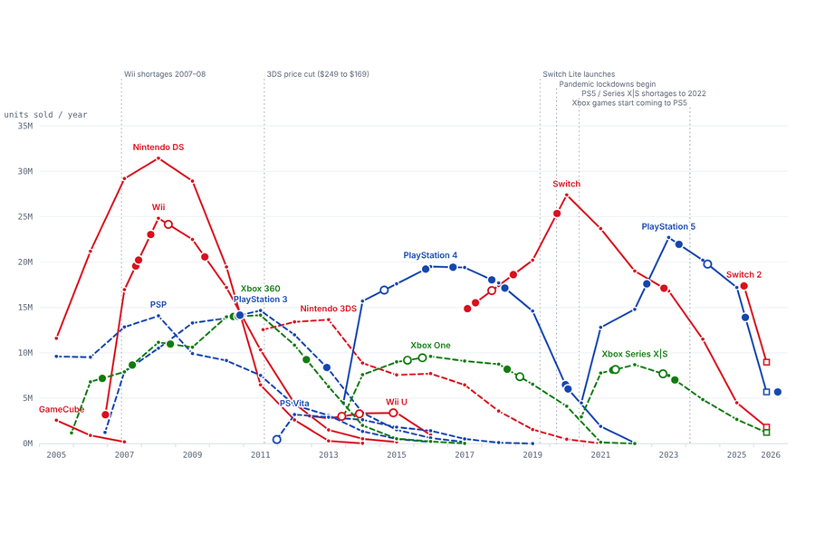
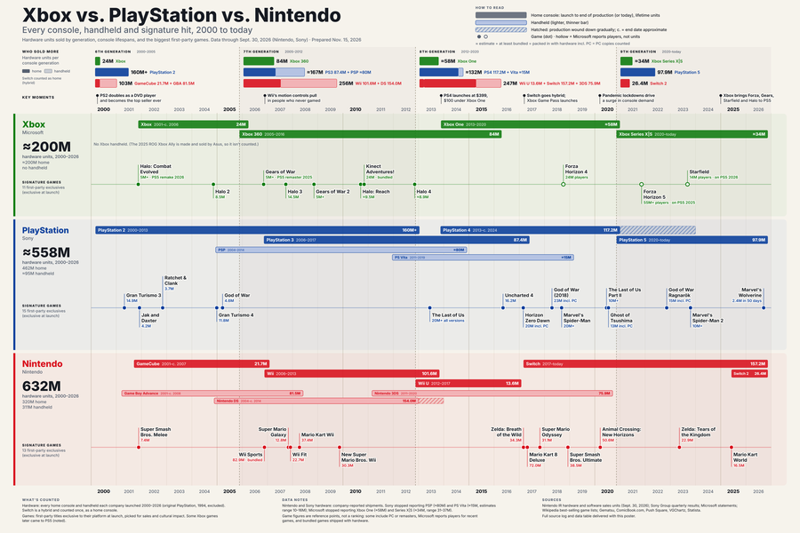

A collection of comparison maps
Timeline Maps
Side-by-side timelines that put events, companies and eras on one shared axis, so you can see what was happening at the same time. Every map lists its sources and marks which figures are estimates.

Joseph Smith vs. Karl Marx
Mormonism and Marxism side by side: two founders, two movements, and their teachings on property, religion and equality.

Do exclusives sell consoles?
Yearly hardware sales for every Xbox, PlayStation and Nintendo console, with 46 hit and miss exclusives marked. Filter, hover and line consoles up by age.

Console Wars: Xbox vs. PlayStation vs. Nintendo
Every console, handheld and signature hit since 2000, with a generation-by-generation sales scoreboard and key moments.